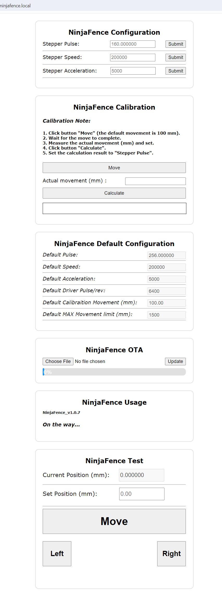

NinjaFence Motion G1 Calibration
Calibrate the stepper pulse value so the distance requested by the controller matches the fence's actual movement.
Safety first: clean the table, remove or fully lower the saw blade, and keep the fence path clear. Be ready to disconnect power if the fence moves unexpectedly.
Before you begin
- Complete the controller, motor driver, and limit-input wiring.
- Make sure the mechanical drive moves freely without binding.
- Connect a phone, tablet, or computer to the NinjaFence Wi-Fi network and open the web interface.
- Open the NinjaFence Calibration section.
Calibration procedure
- Mark the starting position. Make an accurate reference mark at the fence's current position.
- Start the calibration move. Select Move. The default calibration travel is 100 mm.
- Wait for movement to finish. If an emergency occurs, disconnect power immediately.
- Measure the actual travel. Measure the distance between the starting mark and the final fence position.
- Enter the measurement. Put the measured distance in Actual movement.
- Calculate the pulse value. Select Calculate to obtain the corrected stepper pulse value.
- Save the result. Enter that result as Stepper Pulse in the NinjaFence Configuration section.
- Verify. Command a known movement, measure it, and repeat the calibration if the result is outside your required tolerance.

Understanding Stepper Pulse
Stepper Pulse is the number of controller pulses required to move the fence by 1 mm. Its correct value depends on the motor driver, gearing, and whether the machine uses a ball screw, lead screw, or rack-and-pinion drive.
For example, the default value 256 means the controller sends 256 pulses for 1 mm of commanded travel. The original G1 design recommends a value above 200 where the mechanics and driver configuration allow it, because this provides finer command resolution.
Default motion values
| Setting | Default | Meaning |
|---|---|---|
| Stepper Pulse | 256 pulses/mm | 256 controller pulses command 1 mm of movement. |
| Driver Pulse/rev | 6400 steps/rev | The motor driver is configured for 6400 steps per revolution. |
| Maximum movement | 1500 mm | The software movement limit is 1.5 m. |
G1 position reference: automatic homing is not implemented. Calibration corrects movement scale; it does not establish an absolute home position.